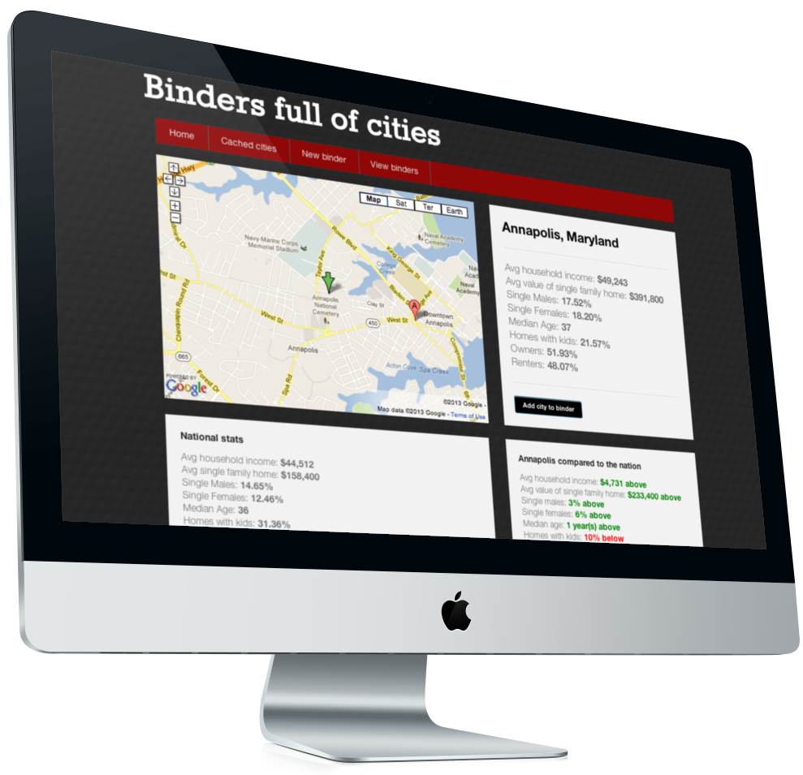
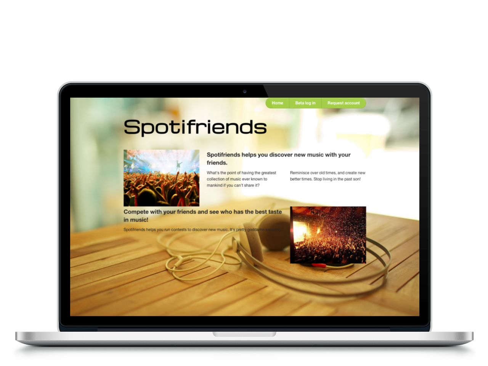

Binders full of cities
For my first solo project, I hooked up Rails to the Zillow demographics API using Nokogiri. The goal of the app is to enter any city in the US, and get demographic data returned (such as average household income, male to female ratio, houses with kids, etc). Cities could be stored in a 'binder', and could easily be compared against each other, and against the national averages.
This app was completed after 3 weeks of class... and although it's super simple, it's super cool. I intend to go back to it and add new features and tests after I put a donk on Spotifriends.
Spotifriends
Second solo project, completed after 6 weeks of class. This app allows groups of friends to share music on Spotify, and hold weekly contests for "best song." The inspiration was a real-life contest that takes place over emails. How primitive!
This was much more complex than the first solo project, with 6 models, nokogiri, rspec, javascript, jQuery and ajax.
Big launch coming up! Stay tuned.
Bobs and Bangs
For this project, I had the pleasure of working with 3 other very talented classmates (browse the code on the left for their details). The purpose of the app is for stylists to create portfolios of their work, and style fans to get ideas and inspiration from those postings. We did some really cool shit here, and used a huge amount of jquery plugins that we heavily customized.